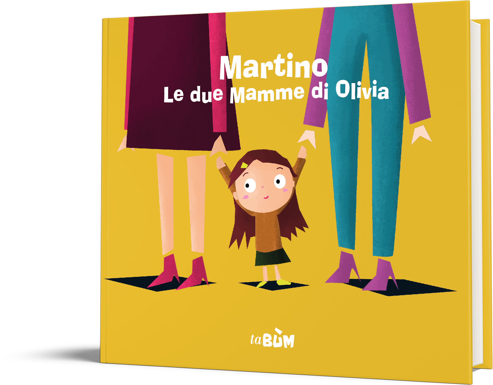
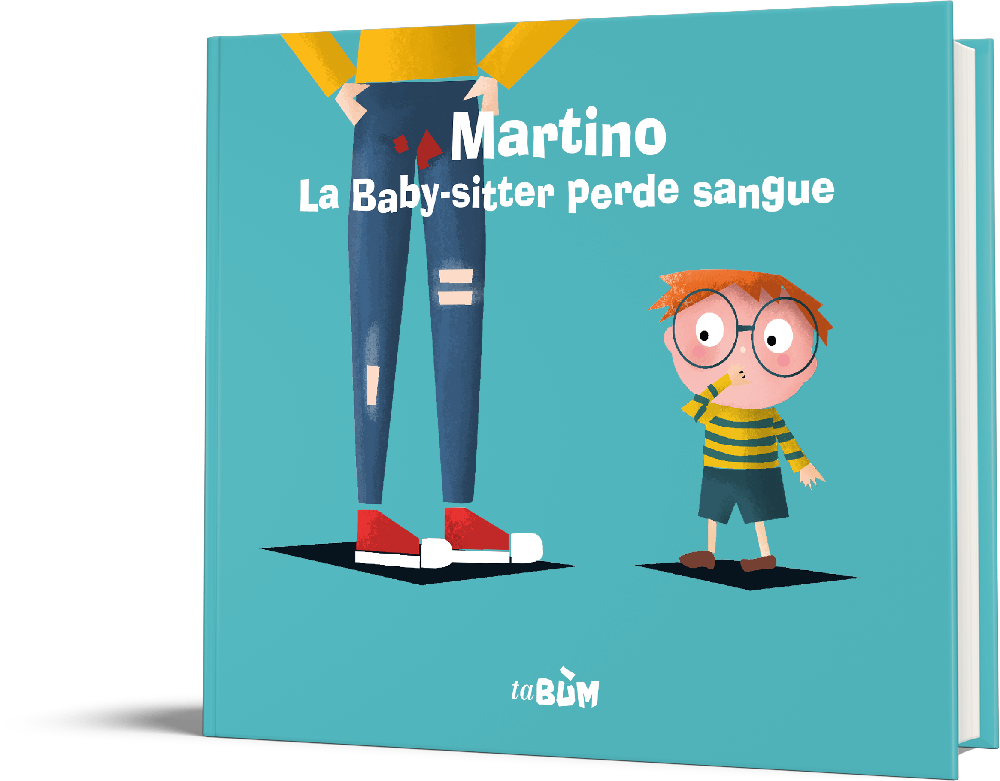
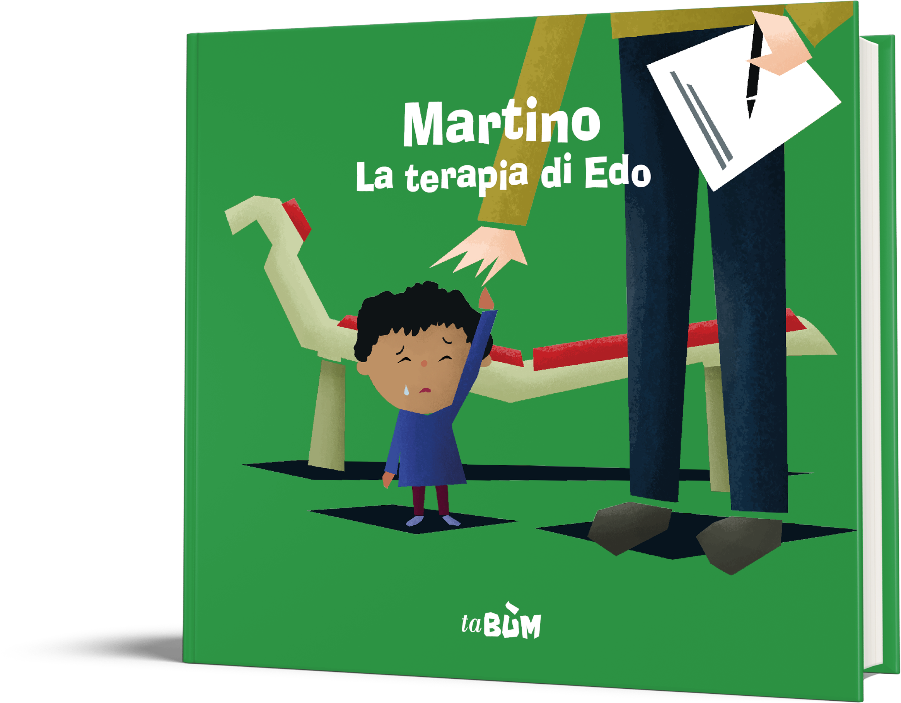

La Maestra non respira
Martino è molto affezionato alla Maestra ma un giorno i suoi genitori gli dicono che è morta. “Morta? Cosa vuol dire morta?” si chiedono Martino, Edo e Olivia. Ed è proprio nella casa della Maestra che i tre amici cercheranno le risposte a questa domanda.
Se vuoi saperne di più..
La morte è un argomento delicato e difficile da intraprendere. In questo libro parliamo ai bambini della morte nella maniera più naturale possibile. Abbiamo voluto trattarla come parte stessa e inevitabile della vita,
come qualcosa di irreversibile ma non spaventoso, e una volta superato il dolore della perdita la vita può e deve andare avanti.
Le due mamme di Olivia
A scuola si stanno tutti impegnando per la festa del papà. Ma Olivia non sa proprio cosa disegnare.
Perché ho due mamme e non un papà? si chiede imbarazzata. Saranno Edo e Martino ad aiutarla a capire che anche la sua è una famiglia.

Se vuoi saperne di più..
In questo libro parleremo dell'orientamento sessuale e di famiglia. Sono due concetti molto importanti ed è bene che i bambini capiscano che sono anche molto ampi e che non esiste un giusto e
uno sbagliato ma che l'unica cosa importante è stare bene con gli altri e con noi stessi.
La Babysitter perde sangue
Martino si è sempre divertito molto con la sua Babysitter. Ma un giorno, proprio mentre stanno giocando, le compare una chiazza rossa sui jeans.
Perché perdi sangue? le chiede Martino. Solo dopo una serie di incomprensioni riuscirà a capire cosa sono le mestruazioni.

Se vuoi saperne di più..
Le prime mestruazioni possono essere causa di forte imbarazzo, e possono creare situazioni scomode, soprattutto se non si ha presente cosa sta succedendo al proprio corpo.
In questo libro vogliamo chiarire in modo semplice cos'è il ciclo e spiegare che è normale e non una cosa di cui avere schifo o imbarazzo.
La terapia di Edo
Edo ha sempre avuto molte difficoltà a memorizzare le cose e rimanere concentrato. Un giorno la Mamma, insieme alla Maestra, gli dice che dovrà andare da un dottore.
Perché devo andare dallo Psicologo? Sono malato? si chiede Edo preoccupato. Insieme a Martino e Olivia troverà il coraggio di affrontare anche questa situazione.

Se vuoi saperne di più..
La prospettiva di andare dallo psicologo o di mandarci il proprio figlio può incutere timore. In questo libro cercheremo di far passare il concetto che andare dallo psicologo non
significa essere malato o debole, ma che è del tutto normale e soprattutto utile, ed è una cosa che facciamo per poter stare meglio.